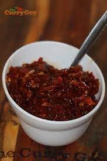

Sri Lankan Katta Sambole

This is a spicy side dish often prepared to spice-up rice, milk-rice etc. Let's learn how to prepare "Sri Lankan spicy chillie sambol"
Ingredients:
- 10 Small red onions or shallots
- 8-10 Dried red chilies (or a mix of red chili flakes)
- 1 Sprig of curry leaves
- A handful of maldive fish flakes (optional)
- Salt and lime to taste
- ¾ Tsp bit of red chili powder
Steps:
- Add in the dried red chilies, salt and the curry leaves into a grinder and grind until fine.
- Add in the red onions and continue to grind until the onions are well incorporated into the chilies. You may leave it as chunky or as smooth as you wish.
- Next, add in the maldive fish flakes and grind for one final time. This can be makes as a completely vegetarian side dish by omitting the maldive fish, but it is indeed a lovely addition of both flavor and texture.
- Lastly add in salt & a generous squeeze of lime to taste and a bit of red chili powder to brighten up the hue of the katta sambol.
All done! Enjoy your spicy side dish!